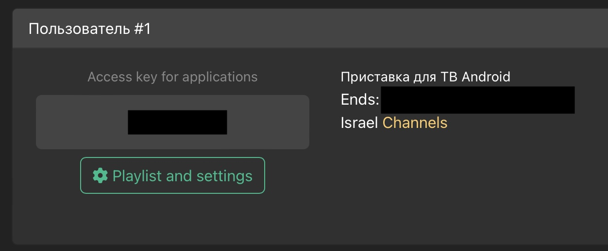
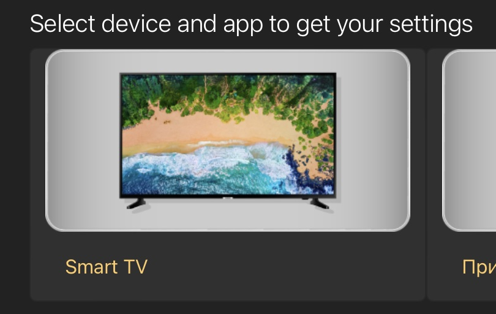
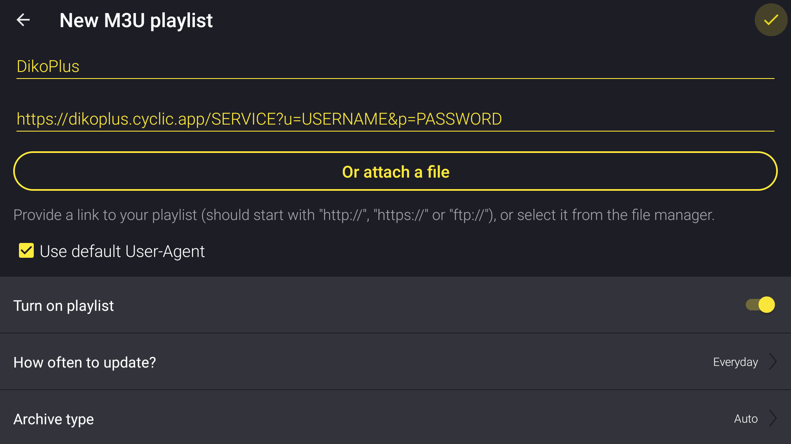
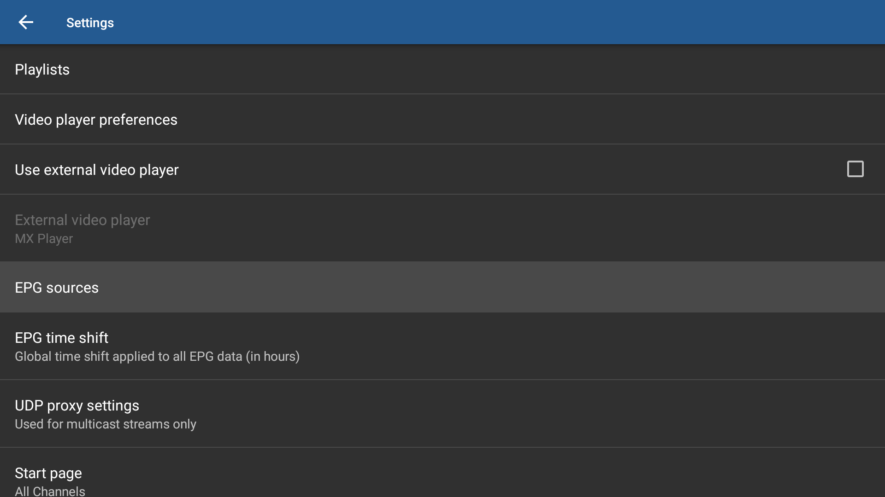

זה איננו שירות IPTV חינמי! כדי להשתמש בשירות זה אתם עדיין נדרשים לרכוש את השירות מאחד מספקי השירות המומלצים בקבוצה!
לאחר רכישת אחד מהשירותים, הכלי הזה נועד על מנת לשפר את חווית המשתמש בשירותים הללו. כפי שניתן לראות בדוגמא בסרטון מעל, שימוש בכלי הזה מוסיף פלייליסט נוסף לנגן ה-IPTV שלכם עם ערוצי ישראל מסודרים בקבוצות, עם כל הלוגואים המעודכנים, עם השמות ערוצים הנכונים ובעברית ועם לוח שידורים מלא ומדוייק.
השירות הזה הינו כולו נכתב בקוד פתוח. הינכם מוזמנים לבחון את הקוד בעצמכם, אם תרצו בכך, כדי לבחון ולראות שאנחנו לא שומרים אף פרט אישי במערכת, אלא רק מספקים את הקישורים המתאימים לפלייליסט.
הינכם נדרשים להוסיף את הפלייליסט לנגן שלכם פעם אחת בלבד. הפלייליסט יתעדכן באופן אוטומטי משינויים שנבצע בפלייליסט, גם בקישור הערוצים וגם בלוח השידורים.
לצערי, אין כרגע ספק לוח שידורים אחד שהינו יציב ומקיף את כל הערוצים. הצלחתי לייצר פלייליסט שכולל כמעט את כל הערוצים עם ספק לוח שידורים אלקטרוני אחד. במידה שנגן ה-IPTV שלכם תומך בהוספה של יותר מספק מלוח שידורים אחד, המדריך הזה יסביר לכם כיצד להוסיף אחד נוסף על מנת לקבל לוח כמעט מלא לחלוטין. אפשרות זאת נתמכת על ידי מגוון נגנים, כגון; טיוימייט, טלויזו ו-IPTV Pro. כהערת צד, אני עדיין עובד אם ספק לוח השידורים מסויים כדי לנסות להכיל את הכל ברשימה אחת כדי לפשט את התהליך עוד יותר.
הוראות שימוש באשף
שלב א׳: בחרו את ספק השירות שלך
חפשו את הדוא״ל או את ההודעת עלי אקפרס שקיבלתם מספק השירות שלכם לאחר רכישת השירות.
בתוך פרטי הדוא״ל, מצאו את שם המשתמש והסיסמה שקיבלתם עבור השירות.
כתובת ה-DikoPlus תלויה ברצונכם לקבל לוגואים על רקע קהה או על רקע בהיר. בחרו את האופצייה המועדפת עליכם מאחת מהאופציות המוצגות פה.
עבור לוגואים רגילים (לוגואים בהירים ללא רקע), כתובת השירות שלכם היא: https://dikoplus.cyclic.app/livego?u=USERNAME&p=PASSWORD
עבור לוגואים על גבי רקע קהה (לוגואים בהירים עם רקע שחור), כתובת השירות שלכם היא: https://dikoplus.cyclic.app/livegodm?u=USERNAME&p=PASSWORD
החליפו את הפרמטרים USERNAME ו-PASSWORD עם הפרטים שקיבלתם מספק השירות שלכם.
זכרו את הכתובת הזו, אתם תצטרכו אותה בשלב ב׳ של המדריך.
שימו לב! אל תעתיקו את הכתובת כמו שהיא כאן בלי לשנות את הפרמטרים! זה לא יעבוד לכם! השירותים הללו דורשים הזדהות. בלי שם המשתמש והסיסמה זה לא יעבוד!
חפשו את הדוא״ל או את ההודעת עלי אקפרס שקיבלתם מספק השירות שלכם לאחר רכישת השירות.
בתוך פרטי הדוא״ל, מצאו את שם המשתמש והסיסמה שקיבלתם עבור השירות.
כתובת ה-DikoPlus תלויה ברצונכם לקבל לוגואים על רקע קהה או על רקע בהיר. בחרו את האופצייה המועדפת עליכם מאחת מהאופציות המוצגות פה.
עבור לוגואים רגילים (לוגואים בהירים ללא רקע), כתובת השירות שלכם היא: https://dikoplus.cyclic.app/crystal?u=USERNAME&p=PASSWORD
עבור לוגואים על גבי רקע קהה (לוגואים בהירים עם רקע שחור), כתובת השירות שלכם היא: https://dikoplus.cyclic.app/crystaldm?u=USERNAME&p=PASSWORD
החליפו את הפרמטרים USERNAME ו-PASSWORD עם הפרטים שקיבלתם מספק השירות שלכם.
זכרו את הכתובת הזו, אתם תצטרכו אותה בשלב ב׳ של המדריך.
שימו לב! אל תעתיקו את הכתובת כמו שהיא כאן בלי לשנות את הפרמטרים! זה לא יעבוד לכם! השירותים הללו דורשים הזדהות. בלי שם המשתמש והסיסמה זה לא יעבוד!
היכנסו לאתר Antifriz לתוך הגדרות החשבון שלכם. תוודאו שבפינה הימנית העליונה לחצתם על דגל ארה״ב כדי שהמידע יופיע באנגלית.
לחצו על Playlist and Settings.

בדף ההגדרות, לקראת אמצע המסך, בחר את האופציה Download בסעיף Playlist.m3u.

לאחר שהורדתם את הקובץ למחשב שלכם, פתחו אותו באמצעות תוכנת עיבוד טקסט כלשהי.
בתוך הקובץ תמצאו כמות גדולה של שורות שנראות מאד דומה לנוסח הבא: http://bethoven.af-stream.com:1600/s/TOKEN/CHANNEL-NAME/video.m3u8. שימו לב שהפרמטר CHANNEL-NAME יהיה שונה עבור כל ערוץ. הפרמטר TOKEN יהיה זהה בכל השורות וזהו הפרמטר שאתם צריכים עבור השלב הבא!
כתובת ה-DikoPlus תלויה ברצונכם לקבל לוגואים על רקע קהה או על רקע בהיר. בחרו את האופצייה המועדפת עליכם מאחת מהאופציות המוצגות פה.
עבור לוגואים רגילים (לוגואים בהירים ללא רקע), כתובת השירות שלכם היא: https://dikoplus.cyclic.app/antifriz?p=TOKEN
עבור לוגואים על גבי רקע קהה (לוגואים בהירים עם רקע שחור), כתובת השירות שלכם היא: https://dikoplus.cyclic.app/antifrizdm?p=Token
החליפו את הפרמטר TOKEN עם ה-TOKEN שהוצאתם מתוך הקובץ M3U שהורדתם מהאתר.
זכרו את הכתובת הזו, אתם תצטרכו אותה בשלב ב׳ של המדריך.
שימו לב! אל תעתיקו את הכתובת כמו שהיא כאן בלי לשנות את הפרמטרים! זה לא יעבוד לכם! השירותים הללו דורשים הזדהות. בלי ה-TOKEN זה לא יעבוד!
חפשו את הדוא״ל או את ההודעת עלי אקפרס שקיבלתם מספק השירות שלכם לאחר רכישת השירות.
בתוך פרטי הדוא״ל, מצאו את שם המשתמש והסיסמה שקיבלתם עבור השירות.
כתובת ה-DikoPlus תלויה ברצונכם לקבל לוגואים על רקע קהה או על רקע בהיר. בחרו את האופצייה המועדפת עליכם מאחת מהאופציות המוצגות פה.
עבור לוגואים רגילים (לוגואים בהירים ללא רקע), כתובת השירות שלכם היא: https://dikoplus.cyclic.app/dino?u=USERNAME&p=PASSWORD
עבור לוגואים על גבי רקע קהה (לוגואים בהירים עם רקע שחור), כתובת השירות שלכם היא: https://dikoplus.cyclic.app/dinodm?u=USERNAME&p=PASSWORD
החליפו את הפרמטרים USERNAME ו-PASSWORD עם הפרטים שקיבלתם מספק השירות שלכם.
זכרו את הכתובת הזו, אתם תצטרכו אותה בשלב ב׳ של המדריך.
שימו לב! אל תעתיקו את הכתובת כמו שהיא כאן בלי לשנות את הפרמטרים! זה לא יעבוד לכם! השירותים הללו דורשים הזדהות. בלי שם המשתמש והסיסמה זה לא יעבוד!
מתוך הגדרות חשבון ה-Edem שלכם, גשו להגדרות הפלייליסט.
חפשו את ה-Access Key שלכם. זהו הקוד שתצטרכו לספק בכתובת השירות בשלב הבא.
כתובת ה-DikoPlus תלויה ברצונכם לקבל לוגואים על רקע קהה או על רקע בהיר. בחרו את האופצייה המועדפת עליכם מאחת מהאופציות המוצגות פה.
עבור לוגואים רגילים (לוגואים בהירים ללא רקע), כתובת השירות שלכם היא: https://dikoplus.cyclic.app/edem?p=TOKEN
עבור לוגואים על גבי רקע קהה (לוגואים בהירים עם רקע שחור), כתובת השירות שלכם היא: https://dikoplus.cyclic.app/edemdm?p=Token
החליפו את הפרמטר TOKEN עם ה-Access Key שהשגתם בשלב הקודם.
זכרו את הכתובת הזו, אתם תצטרכו אותה בשלב ב׳ של המדריך.
שימו לב! אל תעתיקו את הכתובת כמו שהיא כאן בלי לשנות את הפרמטרים! זה לא יעבוד לכם! השירותים הללו דורשים הזדהות. בלי ה-TOKEN זה לא יעבוד!
שלך IPTV-שלב ב׳: בחרו את נגן ה
שימו לב! התוכן פה מוצג תחת ההנחה שקניתם את גרסת הפרימיום של טיוימייט. הגרסה הפרוצה אונליין היא מאד ישנה ואיננה תומכת בכל האופציות המוצגות פה.
עקבו אחר הצעדים הבאים:
שימו לב! במידה שהוספתם כבר את השירות שרכשתם לנגן שלכם, אתם יכולים לדלג על שלב א׳ ולעבור ישירות לשלב ב׳. שלב א׳ בהסבר מיועד למשתמשים חדשים שרק רכשו את השירות ומתחילים את ההגדרות כולן בשעם הראשונה.
שלב א׳: הוסיפו את השירות שרכשתם באופן רגיל, ללא קשר לפלייליסט הזה. השירות נותן לכם גישה לכל התכנים הנוספים של השירות שרכשתם.
לחצו על Add playlist
בחרו את האופציה Xtream Codes
הקלידו את הנתונים שניתנו לכם מספק השירות, כולל את כתובת השרת, שם המשתמש והסיסמה. שימו לב שבתמונה רואים דוגמה של שירות לייבגו. הקפידו להשתמש בפרטי השירות שלכם.
המערכת תזהה ותנתח את פרטי השירות במשך כמה שניות ואז תציג את כל הערוצים והתוכן ה-VOD שקיים בשירות. במידה וקיבלתם שגיאה, אנא חזרו אחרוה צעד אחד ובידקו את נכונות הפרטים שסיפקתם בשלב הקודם. אתם יכולים ללחוץ על שם הפלייליסט ולשנות אותו אם תרצו.
לאחר מספר שניות המערכת תסיים את ההוספה של השירות. אתם יכולים, לדוגמא, לפנות לעבר קטגוריית העברית של השירות על מנת לראות את מה שמסופק כברירת מחדל על ידי השירות.
שלב ב׳: הגדרת שירות DikoPlus המותאם אישית על מכשיר הסטרימר.
הקלידו את הכתובת שהכנתם מהשלב הקודם. הדוגמה בתמונה מראה שימוש בשירות לייבגו.
המערכת תנתח את הקובץ ובסוף התהליך תציג שזיהתה את הערוצים. הקישו על Next.
קובץ מספק באופן אוטומטי את הקישור לקובץ לוח השידורים. לחצו על Done.
במסך הבא תוכלו לראות שהפלייליסט נוסף למערכת.
לחצו על לחצן האחורה פעם אחת בשלט ובחרו באופציית EPG בהגדרות.
לחצו על האופצייה העליונה EPG sources > Add source.
לחצו על Enter URL והקלידו את הכתובת https://antifriztv.com/xmltv.xml.gz ולחצו על OK.
לחצו אחורה פעם אחת בשלט וודאו ששני הפרמטרים של Update on app start ו-Update on playlists change מסומנים למצב פעיל.
לחצו אחורה בשלט פעם אחת והיכנסו לאופציית Playlists ולחצו על DikoPlus כדי להיכנס לתוך הגדרות הפלייליסט. לאחר מכן לחצו על אופציית EPG sources.
בתחתית הרשימה תראו את antifriztv.com, הפעילו את השירות כדי להוסיף אותו לפלייליסט.
חזרו חזרה למסך הראשי ותגללו בקטגוריות הערוצים כדי להגיע לרשימת DikoPlus. כאן תוכלו לראות עכשיו את הפלייליסט המותאם אישית עם כל הערוצים ולוח שידורים כמעט מלא לחלוטין.
עקבו אחר הצעדים הבאים:
שימו לב! במידה שהוספתם כבר את השירות שרכשתם לנגן שלכם, אתם יכולים לדלג על שלב א׳ ולעבור ישירות לשלב ב׳. שלב א׳ בהסבר מיועד למשתמשים חדשים שרק רכשו את השירות ומתחילים את ההגדרות כולן בשעם הראשונה.
שלב א׳: הוסיפו את השירות שרכשתם באופן רגיל, ללא קשר לפלייליסט הזה. השירות נותן לכם גישה לכל התכנים הנוספים של השירות שרכשתם.
לחץ על Create playlist. במידה וקיבלתם הודעה שזהו נגן בלבד ואינו מכיל תוכן, תאשרו.
בחרו את האופציה New Xtream Codes playlist.
הקלידו את הנתונים שניתנו לכם מספק השירות, כולל שם לפלייליסט, את כתובת השרת (בדוגמה בתמונה מוצג שירות לייבגו), שם המשתמש והסיסמה. בסיום, לחצו על האישור בפינה הימנית העליונה. במידה וקיבלתם הודעת אזהרה שטלויזו איננה אחראית לתוכן הפלייליסט, תאשרו.
המערכת תזהה ותנתח את פרטי השירות במשך כמה שניות ואז תציג את כל הערוצים והתוכן ה-VOD שקיים בשירות. במידה וקיבלתם שגיאה, אנא חזרו אחרוה צעד אחד ובידקו את נכונות הפרטים שסיפקתם בשלב הקודם.
לאחר מספר שניות המערכת תסיים את ההוספה של השירות. אתם יכולים, לדוגמא, לפנות לעבר קטגוריית העברית לראות את מה שמסופק כברירת מחדל על ידי השירות. טיפ קטן, בפינה הימנית העליונה אתם יכולים לשנות את אופן התצוגה בהתאם לבחירתכם האישית.
שלב ב׳: הגדרת הפלייליסט המותאם אישית על מכשיר הסטרימר.
במסך הראשי של טלויזו, היכנסו להגדרות בפינה בימנית העליונה. בחרו באופציה הראשונה כדי להיכנס להגדרות ה-Playlists.
לחצו על סימן הפלוס בפינה בימנית העליונה כדי להוסיף פלייליסט נוסף. לאחר מכן, בחרו באופציה New M3U playlist.
הוסיפו שם שתרצו עבור הפלייליסט הנוסף והקלידו את לינק שירות ה-DikoPlus שיצרתם בשלב הראשון של המדריך הזה.

על המסך תוכלו לראות את שני הפלייליסטים עכשיו. לחצו אחורה פעם אחת בשלט והיכסו להגדרות ה-Program guide.
בפינה הימנית העליונה הקישו על סימן הפלוס כדי להוסיף עוד מקור לוח שידורים נוסף. ספקו אם השם Antifriz ואת הקישור https://antifriztv.com/xmltv.xml.gz. לחצו על אישור בסיום בפינה הימנית העליונה.
שימו לב שעדכון לוח השידורים לוקח כמה דקות, אז לא להיבהל אם אתם לא רואים את הערוצים מעודכנים מיד. חזרו חזרה למסך הראשי של טלויזו ובחרו לעבור לפלייליסט DikoPlus מהתפריט העליון.
עקבו אחר הצעדים הבאים:
שימו לב! במידה שהוספתם כבר את השירות שרכשתם לנגן שלכם, אתם יכולים לדלג על שלב א׳ ולעבור ישירות לשלב ב׳. שלב א׳ בהסבר מיועד למשתמשים חדשים שרק רכשו את השירות ומתחילים את ההגדרות כולן בשעם הראשונה.
שלב א׳: הוסיפו את השירות שרכשתם באופן רגיל, ללא קשר לפלייליסט הזה. השירות נותן לכם גישה לכל התכנים הנוספים של השירות שרכשתם.
במסך הראשי, לחצו על Add playlist ולאחר מכן בפינה הימנית העליונה על Add URL.
במסך הבא הקלידו את פרטי הקישור שקיבלתם מספק השירות שלכם והקישו OK.
לאחר כדקה או שתיים השירות ייטען למסך. בזמן זה אתם יכולים לנווט לאזור העברית ולצפות במה שניתן על ידי הספק כברירת מחדל.
שלב ב׳: הגדרת הפלייליסט המותאם אישית על מכשיר הסטרימר.
בפינה השמאלית העליונה, הקישו על פתיחת התפריט ובחרו Settings. לאחר מכן, לחצו על Playlists.
בתוך אזור הפלייליסטים, בפינה הימנית העליונה, לחצו על סימן הפלוס ובחרו Add URL. בחלון שנפתח, הקלידו את לינק השירות של DikoPlus שיצרתם בשלב הראשון של המדריך הזה.
לאחר הוספת הפלייליסט, לחצו בפינה השמאלית העליונה על התפריט ובחרו באופציה Settings. לאחר מכן, היכנסו ל-EPG sources.

בפינה הימנית העליונה, לחצו על סימן הפלוס ומחרו את האופציה Add URL.
הקלידו את הכתובת הבאה כמקור נוסף: https://antifriztv.com/xmltv.xml.gz לחצו על OK בסיום.
שימו לב שעדכון לוח השידורים לוקח כמה דקות, אז לא להיבהל אם אתם לא רואים את הערוצים מעודכנים מיד. חזרו חזרה למסך הראשי של טלויזו ובחרו לעבור לפלייליסט DikoPlus מהתפריט בפינה השמאלית העליונה.
הגדרות כלליות:
כיוון שקיימים מספר רב של סוגי נגנים, אינני יכול לנסות את כולם. ולכן, להלן מספר כללים עקרוניים.
לאחר שהכנתם את הקישור עבור השירות שלכם בשלב א׳ של המדריך, הוסיפו את הקישור בתוך הנגן שלכם כקישור אונליין לפלייליסט מסוג M3U.
במידה והנגן לא יודע כיצד למשוך באופן אוטומטי את לוח השידורים (תוכלו לבדוק זאת בהגדרות לוח השידורים על ידי בדיקה אם התווסף לוח שידורים ממקור epgshare01.online), ספקו לו באופן ידני בהגדרות את הקישור הבא: http://bit.ly/DikoPlusEPG.
במידה והנגן תומך ביכולת לספק יותר מלוח שידורים אחד, הוסיפו ספק נוסף עם הקישור הבא: https://antifriztv.com/xmltv.xml.gz.
!שאלות ותשובות נפוצות
רוב הספקים אינם מספקים לוח שידורים מסודר עבור הערוצים הישראלים ואפילו לא לוגואים לרוב הערוצים. מטרת המדריך הזה היא לאפשר חווית משתמש דומה ככל האפשר לחבילת כבלים מלאה
ברוב המקרים הסיבה לכך נובעת מאחת מהסיבות הבאות: א. הנגן שאתם משתמשים בו לא תומך במשיכת לוח השידורים באופן אוטומטי. גשו לשלב א׳ של המדריך ןבחנו את ההוראות לנגן אחר. ב. חלק מהנגנים צריכים לקבל ״דחיפה״ לעדכן את הפלייליסט ולוח השידורים כדי להתעדכן. גשו להגדרות הנגן שלכם וחפשו את באופציה ליזום עדכון של הפלייליסט ולוח השידורים. ג. הקשתם שם משתמש ו/או סיסמה שגויים. וודאו את ההגדרות של הקישור לכם לאמיתות הפרטים.
ספק השירות לעיתים מוסיף ערוצים שאינם שייכים למדינה הרלוונטית. בפלייליסט אני דואג לנקות אותם מהרשימה
מכיוון שצריכים לספק מספר כתובות שבמקור הן מאד ארוכות, יצרתי קישורים מקוצרים כדי לחסוך הקלדות ארוכות עם השלט
מכיוון שאלו אנשים פרטיים שתורמים מזמנם הפרטי ולוקח זמן לייצר זאת. אם זאת, אני עובד על זה
!הצהרת אי אחריות
שירות זה ניתן ללא תשלום וללא אחריות על מנת לספק חווית משתמש טובה ללקוחות שירותי השידורים החיים עם ערוצים ישראלים. זיכרו שאתם עדיין נדרשים לרכוש את השירות מאחד מהספקים באופן עצמאי